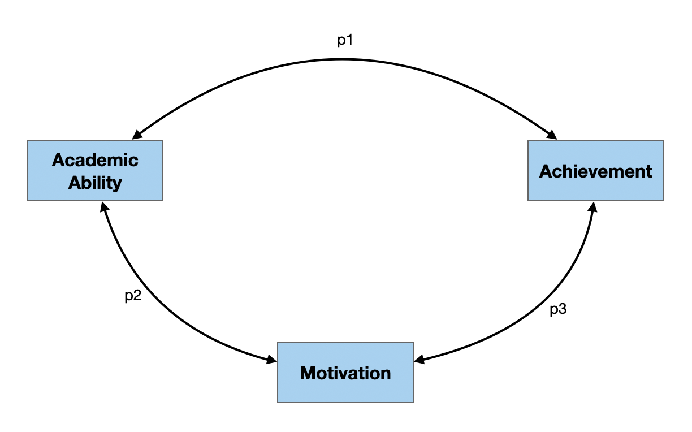
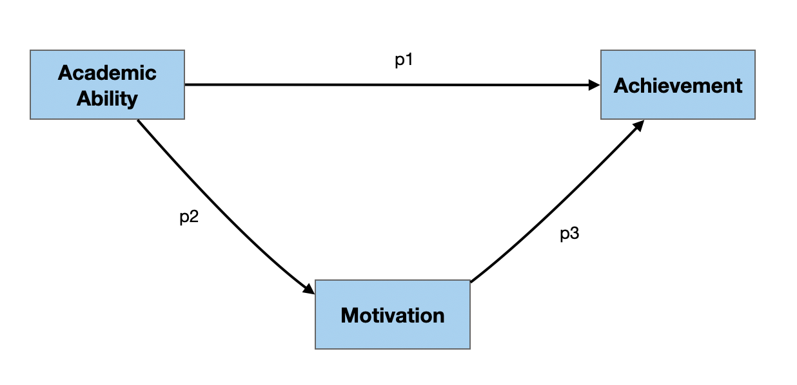
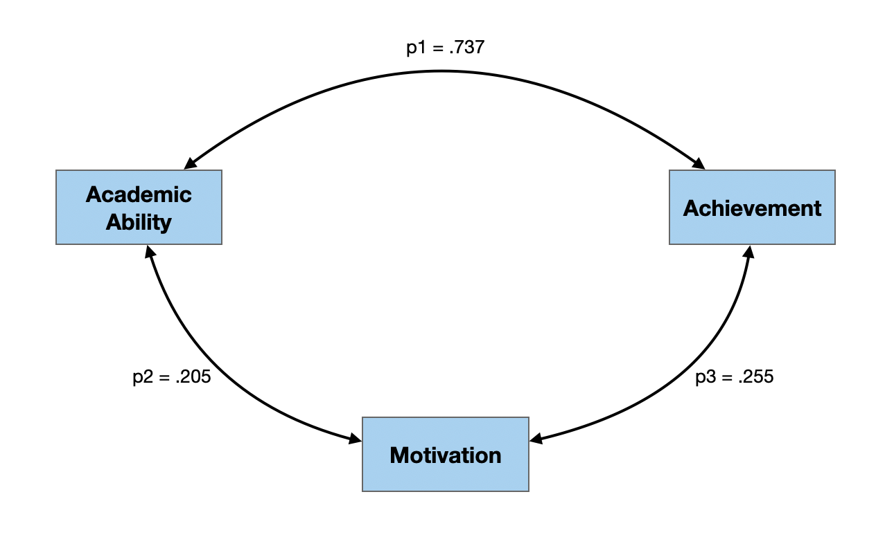
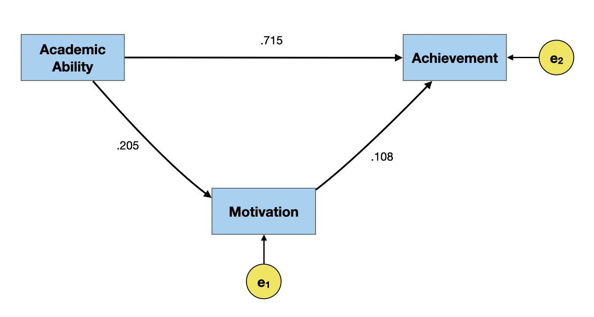
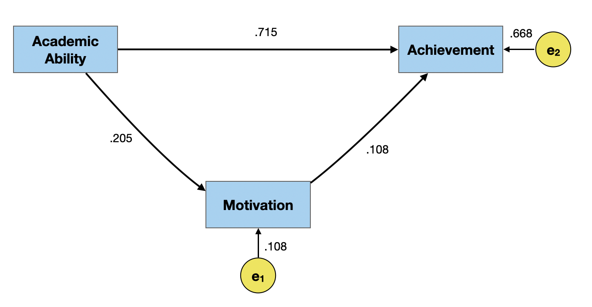
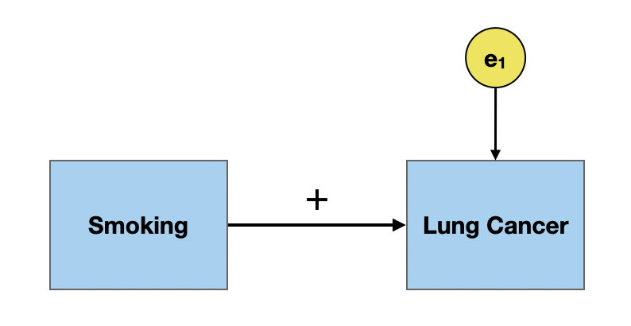
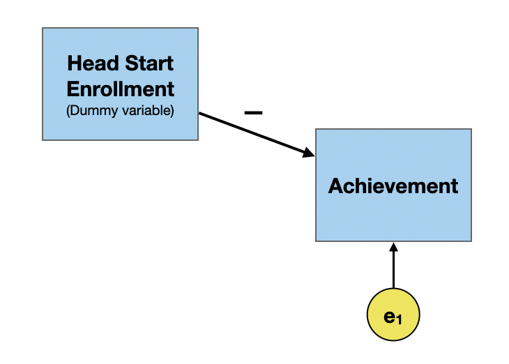
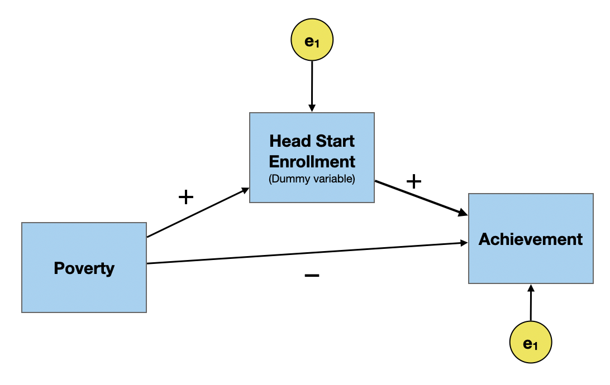
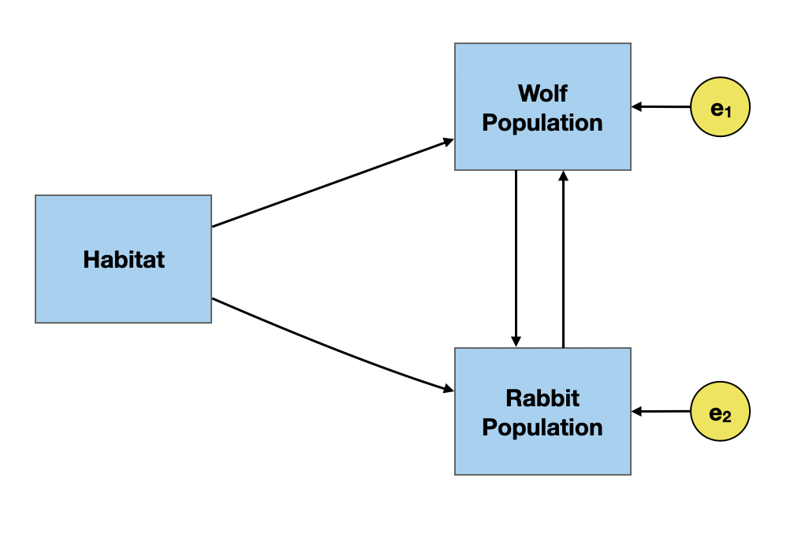
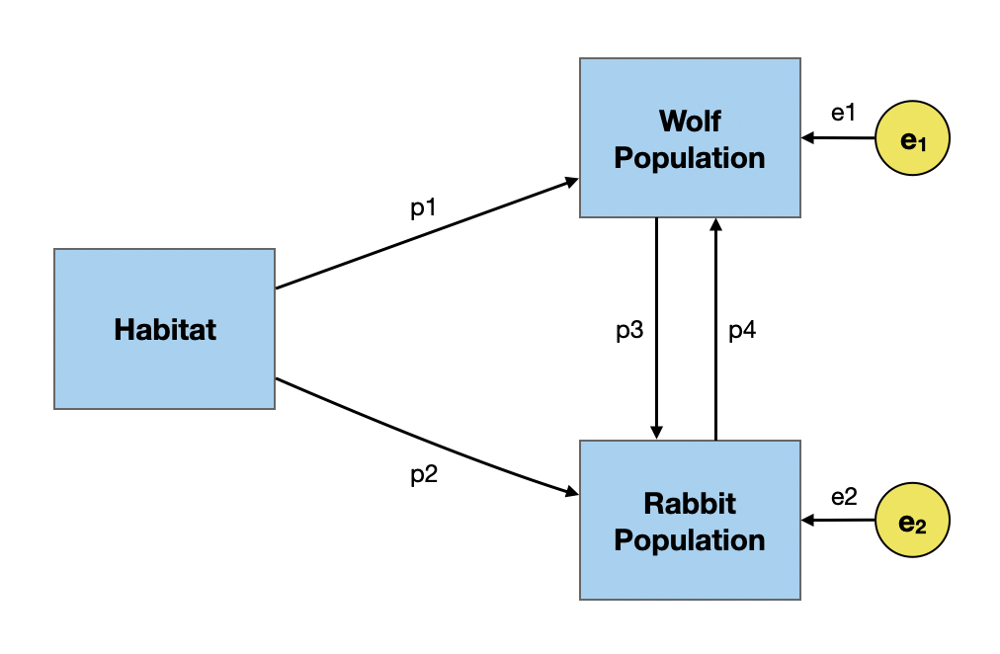

2023-08-02
Path diagrams are visual depictions of the hypothesized relationships between a set of variables. In this set of notes, we will introduce some of the ideas and concepts related to path diagrams, and the estimation of effects depicted in a path diagram (i.e., path analysis).
To help us in this endeavor, we will consider three potential student-level variables for our path model:
# Make simulation reproducible
set.seed(1)
# Simulate the data and convert to data frame
sim_dat <- data.frame(MASS::mvrnorm(n = 1000, mu = means, Sigma = corrs, empirical = TRUE)) |>
rename(
achievement = X1,
ability = X2,
motivation = X3
)
# View simulated data
head(sim_dat) achievement ability motivation
1 -0.5157929 -0.96667633 0.95967280
2 -0.1533491 -1.50764502 0.65576719
3 -0.4205593 0.97389153 -0.40326809
4 1.5952036 1.11549647 0.15201335
5 0.2921577 0.08731381 0.03244754
6 -0.9016836 0.15578506 -1.32479673In a path diagram,
In both of the examples below, there are three manifest/measured variables (academic ability, motivation, and achievement) and three paths (p1, p2, and p3). The difference between the two is that in the right-hand diagram, there are hypothesized causal relationships, while in the left-hand diagram the relationships are not presumed to be causal.


The model depicted in this path diagram posits that there are relationships between:
The double-headed arrows on the paths indicate that the variables are related (i.e., correlated), although there is no causal direction hypothesized.
In a path analysis, one goal is to estimate path coefficients. In this model, since the paths represent the relationship between two variables, the path coefficients are simply the bivariate correlations between each set of variables.

In path modeling, we often assert weak causal ordering on the variables in the model. With weak causal ordering, we are not saying X causes Y, but rather that if X and Y are casually related, one of these variables (typically X) is the cause of the other.
flowchart LR A[X] --> B[Y]
In this model, the paths have arrows at only one end indicating the hypothesized causal relationship. The cause is in the direction of the arrow, that is the hypothesized cause is at the butt end of the line, while the hypothesized effect is at the arrowhead side of the line.
Any weak causal model should be posited prior to collecting or looking at the data! Creating this model can also help you identify the data to collect.
The model depicted in this path diagram posits the following causal relationships:
Again, we would want to estimate the path coefficients shown in the diagram for the weak causal model. In causal models, the path coefficients are not necessarily the correlations. To find the path coefficients we need to use the tracing rule. The tracing rule indicates that:
The correlation between two variables X and Y is equal to the sum of the possible products of all possible paths from each possible tracing from X to Y, with the following two exceptions:
- The same variable is not entered more than once in the same tracing.
- A variable is not both entered and exited through an arrowhead.
As an example, consider all the tracings (routes) that allow us to start at the academic ability variable and go to the achievement variable in the path diagram at right.
There are two possible tracings that conform to the tracing rule:
Similarly, we could have started at the achievement variable and determined the tracings to get to the academic ability variable:
Note that when we are considering tracings, we do not have to worry about the direction of the arrow, only that there is a path we can trace. The only rule regarding arrowheads is that a variable can not be both entered and exited through an arrowhead.
Each tracing yields a product of the path coefficents used in the tracing. Thus the first tracing is \(p1\) (there is only one path, so the product is simply the path), and the second tracing yields \(p2 \times p3\). Since the tracing rule says that the correlation between academic ability and achievement is equal to the sum of the products yielded by the tracings, we know that:
\[ \begin{split} r_{\mathrm{academic~ability,~ achievement}} &= p1 + p2(p3) \\[1em] .737 &= p1 + p2(p3) \end{split} \]
Use the tracing rule to write two more equations. The first equation should represent the correlation between motivation and achievement, and the second equation should represent the correlation between ability and motivation.
To represent the correlation between motivation and achievement we have two potential tracings:
\[ \begin{split} r_{\mathrm{motivation,~ achievement}} &= p3 + p2(p1) \\[1em] .255&= p3 + p2(p1) \end{split} \]
To represent the correlation between academic ability and motivation we have one tracing:
\[ \begin{split} r_{\mathrm{academic~ability,~ motivation}} &= p2 \\[1em] .205&= p2 \end{split} \]
QUESTION: Why can’t we use the tracing that takes p1 from academic ability to achievement then takes p3 to motivation??
We now have three equations with three unknowns. We can solve this system of equations to find p1, p2, and p3.
\[ \begin{split} .737 &= p1 + p2(p3) \\[1em] .255 &= p3 + p2(p1) \\[1em] .205 &= p2 \end{split} \]
Substitute in .205 for p2 in the first equation and solve for p1.
\[ \begin{split} .737 &= p1 + p2(p3) \\[1em] .737 &= p1 + .205(p3) \\[1em] p1 &= .737 - .205(p3) \end{split} \]
Now substitute .205 in for p2 and \(.737 - .205(p3)\) in for p1 in the second equation and solve for p3.
\[ \begin{split} .255 &= p3 + p2(p1) \\[1em] .255 &= p3 + .205(.737 - .205(p3)) \\[1em] .255 &= p3 + 0.151085 - 0.042025(p3) \\[1em] 0.103915 &= 0.957975(p3) \\[1em] p3 &= .108 \end{split} \]
Now substitute .205 in for p2 and .108 in for p3 in the first equation and solve for p1.
\[ \begin{split} .737 &= p1 + p2(p3) \\[1em] .737 &= p1 + .205(.108) \\[1em] .737 &= p1 + 0.02214 \\[1em] p1 &= .715 \end{split} \]
Path coefficients are standardized coefficients which can be interpreted similar to standardized regression coefficients.
There are two things to note when we interpret path coefficients that are different from when we interpret regression coefficients.
Note also that the interpretation is not controlling for anything. These are simple relationships that we are interpreting.
We can also find the path coefficients using regression rather than algebra. To determine the path coefficients in the weak causal model, we fit a set of regression models using the “causes” as predictors of any particular effect.
In our path diagram there are two effects, so we would need to fit two separate regression models. The syntax for these models would be:
achievement ~ 0 + ability + motivation
motivation ~ 0 + ability# Path coefficients for paths to achievement
tidy(lm(achievement ~ 0 + ability + motivation, data = sim_dat))# A tibble: 2 × 5
term estimate std.error statistic p.value
<chr> <dbl> <dbl> <dbl> <dbl>
1 ability 0.715 0.0216 33.1 8.26e-163
2 motivation 0.108 0.0216 5.02 5.97e- 7Even if the causal relationships were specified correctly, the model likely does not include ALL of the causes for motivation and achievement. There is also unaccounted for variation due to random variation and measurement error. To account for these three sources of variation in the weak causal model, we will add an error term to eavch of the effects in the path model.
We can also estimate the path coefficients for the error terms. These path coefficients are computed as,
\[ \epsilon_k = \sqrt{1 - R^2_k} \] where, \(R^2_k\) is the \(R^2\)-value from the regression model fitted to compute the initial path coefficients.
# Path coefficients for error term on achievement
glance(lm(achievement ~ 0 + ability + motivation, data = sim_dat))# A tibble: 1 × 12
r.squared adj.r.squared sigma statistic p.value df logLik AIC BIC
<dbl> <dbl> <dbl> <dbl> <dbl> <dbl> <dbl> <dbl> <dbl>
1 0.554 0.554 0.668 621. 6.36e-176 2 -1014. 2034. 2049.
# ℹ 3 more variables: deviance <dbl>, df.residual <int>, nobs <int>[1] 0.6678323# Path coefficient for error term on motivation
glance(lm(motivation ~ 0 + ability, data = sim_dat))# A tibble: 1 × 12
r.squared adj.r.squared sigma statistic p.value df logLik AIC BIC
<dbl> <dbl> <dbl> <dbl> <dbl> <dbl> <dbl> <dbl> <dbl>
1 0.0420 0.0411 0.979 NA NA NA -1397. 2798. 2808.
# ℹ 3 more variables: deviance <dbl>, df.residual <int>, nobs <int>[1] 0.9787747
We also need to pay attention to time precedence. Cause does not operate backward in time. In our example, academic ability is well-documented as something that does not change after grade school. Thus, it would precede motivation and achievement in time.
What do we mean when we say “X causes Y”? Contrary to popular belief, we do not mean that changing X has a direct, and immediate change on Y. For example, it is now well known that smoking causes lung cancer.
But, not everyone who smokes ends up getting lung cancer.
Instead, cause is a probabilistic statement about the world. When we say smoking causes lung cancer what we mean, statistically, is that smoking increases the probability of developing lung cancer.
Moreover, this increased probability is due to smoking, and not something else.
There are three primary requirements for a causal relationship between X and Y.
Time precedence is often reflected in the orientation of the model. Variables that occur earlier in time are oriented further to the left side of the diagram than variables that occur later.
In the smoking example, to be considered the cause for lung cancer, smoking has to occur prior to the onset of lung cancer.1
In our path diagram relating academic ability and motivation to acheivement, academic ability is furthest to the left (it occurs earliest), followed by motivation, and then academic achievement.
A common cause is a variable that is a cause of both X and Y which accounts for the relationship between X and Y. Consider the following example where we want to look at the causal impact of participation in Head Start programs on academic achievement.
In practice, the path coefficient tends to be negative. That is Head Start participants tend to have lower academic achievement than their non-Head Start peers.
A common cause of both Head Start participation and academic achievement is poverty. This is shown below.
Once we include poverty as a common cause, the path coefficient between Head Start participation and academic achievement switches direction. That is, after including poverty in the path model, Head Start participants tend to have higher academic achievement than their non-Head Start peers. This is akin to how effects in a regression model might change after we control for other predictors.
In order to meet the third causal requirement, we need to include ALL common causes in the model. This requirement is the hardest to prove.
In the path diagrams we have looked at so far, the causal paths have gone in only one direction; there is a distinct cause and effect. The error terms on the effect variables are also all uncorrelated. These are called recursive models. It is possible for variables to effect each other (e.g., predator–prey relationships), or for the error terms to be correlated. This is called a non-recursive model.
The problem with estimating the path coefficients in the non-recursive model is it is under-identified. In our predator–prey model, we need to estimate four path coefficients, but only have three correlations (equations) from which to do so. We can’t solve this without adding additional constraints!

\[ \begin{split} r_{\mathrm{H,W}} &= p1 + p2(p4) \\[1em] r_{\mathrm{H,R}} &= p2 + p1(p3) \\[1em] r_{\mathrm{H,W}} &= p3 + p4 + p1(p2) \end{split} \]